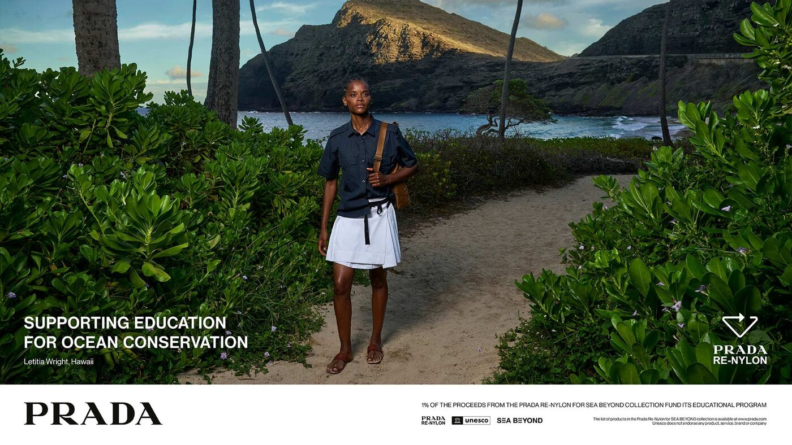

Benedict Cumberbatch and Letitia Wright stand at the water’s edge. Behind them the sea does most of the talking. Prada released its 2026 Re-Nylon campaign from Milan in the spring.
Prada built this year’s Re-Nylon campaign around two people and one element. Cumberbatch and Wright were photographed in dialogue with the ocean, placed inside the coastal scenes rather than posed against them. The water is not scenery in these pictures. It holds the centre, and the figures arrange themselves around it.
The films
The campaign grew out of two documentaries made with National Geographic CreativeWorks. This is the fourth year Prada has worked with National Geographic as a storytelling partner, and the longest the brand has let a single idea run. The films follow the two actors along coastlines where ocean conservation is something you can see happening on the ground.
The locations move from Oahu in Hawai’i to the Izu Peninsula and the city of Kamakura in Japan. The still images come out of those same shoots. Photographs and films share one set of places and one argument, so the campaign reads as a single piece of work rather than an advertisement with a film attached.
The choice of two documentary subjects rather than a studio set tells you where the brand wants the attention to land. Cumberbatch and Wright move through real coast, real tide, real light. The clothes appear inside that, worn rather than displayed, which keeps the conservation message and the product on the same plane instead of in competition.

Prada Re-Nylon 2026, the ocean placed at the centre · Courtesy of Prada
The fabric
Re-Nylon is regenerated nylon. Prada makes it by gathering plastic waste from landfills, textile production and the sea, then breaking that material down and rebuilding it into yarn. The chemistry is called depolymerization and re-polymerization. The thread that results can be recycled again with no loss of quality, which is the whole point of the exercise.
Prada launched the line in 2019 across bags and ready-to-wear. Since then the house has shifted its nylon production from virgin material to the regenerated version across every category. Nylon itself is old ground for the brand. Miuccia Prada brought the fabric into luxury in the 1970s, when a synthetic inside a fashion house still counted as a provocation.
The line covers more than outerwear now. Re-Nylon runs through totes, the Pocket bag, backpacks, caps and full ready-to-wear, and the brand has folded the material into pieces that once would have arrived in something else. The move is framed as a standing commitment rather than a single capsule. That framing matters, because a recycled fabric only counts for much once it becomes the default instead of the special edition.
The ocean is the model here. Everything the campaign sells is arranged in its service.
The Splendid EditSea Beyond
The campaign feeds a programme called SEA BEYOND. Prada Group runs it with the Intergovernmental Oceanographic Commission of UNESCO, a partnership that has held since 2019. The work is education first, mostly aimed at younger people. Its lessons in ocean literacy have reached more than 35,000 students so far.
Since July 2023, one percent of proceeds from the Re-Nylon for SEA BEYOND collection has gone to the project. The money now funds more than classes. In 2025 the group set up a multi-partner trust fund to draw in outside backers, and the remit widened into research, community work and ocean policy. A Venice scheme called the Kindergarten of the Lagoon takes preschool children out into the wetland beside the city.
The faces
Cumberbatch and Wright both come to the campaign from long film careers. Cumberbatch holds an Oscar nomination for The Power of the Dog and another for The Imitation Game, plus a CBE for his work on stage and screen. Wright won a BAFTA Rising Star award for Black Panther and has since moved into directing. Both return to Marvel films in 2026, which keeps them in front of very large audiences.
Their presence does work beyond glamour. A campaign about ocean education needs people who can carry a documentary as well as a photograph, and both can. Prada has put its own staff through the same material, training more than 14,000 employees on ocean literacy through virtual-reality content and the AWorld app the United Nations uses for the purpose.
Re-Nylon started as a fabric swap and has become a position. The 2026 campaign states it without hedging. Buy the bag, fund the lesson, and look at the sea while you do it. The brand has spent fifty years arguing that a synthetic can carry meaning, and the argument lands more cleanly now than it did in the 1970s.
Prada Re-Nylon 2026 campaign released by Milan-based Prada in March 2026, with documentary films by National Geographic CreativeWorks in support of the Prada Group SEA BEYOND project. Re-Nylon pieces are available at prada.com and at the brand’s boutiques worldwide.
Photography courtesy of Prada · Prada Re-Nylon 2026